|
The
Global Emergence of Gay and Lesbian Politics
National Imprints of a Worldwide Movement
edited by Adam, Barry D, Jan Willem Duyvendak and André Krouwel
448 pp • 6x9 • Fall 1998
paper 978-1-56639-645-5
cloth 978-1-56639-644-8
|
|
Men
Who Sell Sex
International Perspectives on Male Prostitution and AIDS
edited by Aggleton, Peter 296 pp • 6x9
• Fall 1998
paper 978-1-56639-669-1
cloth 978-1-56639-668-4
|
| 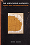 |
The Hirschfeld Archives
Violence, Death, and Modern Queer Culture
Bauer, Heike
240 pp • 6x9 • Spring 2017
paper 978-1-4399-1433-5
cloth 978-1-4399-1432-8
|
| 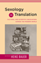 |
Sexology and Translation
Cultural and Scientific Encounters across the Modern World
edited by Bauer, Heike
284 pp • 6x9 • Fall 2015
paper 978-1-4399-1249-2
cloth 978-1-4399-1248-5 |
|
Modern
American Queer History
edited by Black, Allida M. 312 pp • 7x10
• Spring 2001
paper 978-1-56639-872-5
cloth 978-1-56639-871-8
|
|
Gay
and Lesbian Politics
Sexuality and the Emergence of a New Ethic
Blasius, Mark 240 pp • 5.5x8.25 •
Fall 1994
paper 978-1-56639-174-0
cloth 978-1-56639-173-3 |
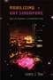 |
Mobilizing Gay Singapore
Rights and Resistance in an Authoritarian State
Chua, Lynette J.
228 pp • 6x9 • Spring 2014
paper 978-1-4399-1032-0
cloth 978-1-43991-031-3 |
|
Making
History Matter
Dawidoff, Robert 304 pp • 6x9 •
Fall 1999
paper 978-1-56639-749-0
cloth 978-1-56639-748-3
|
|
Out
in the South
edited by Dews, Carlos L. and Carolyn Leste Law 256
pp • 7x10 • Fall 2000
paper 978-1-56639-814-5
cloth 978-1-56639-813-8
|
 |
Q
& A
Queer in Asian America
edited by Eng, David L. and Alice Y. Hom 445
pp • 7x10 • Fall 1998
paper 978-1-56639-640-0
cloth 978-1-56639-639-4
|
 |
Transfeminist Perspectives in and beyond Transgender and Gender Studies
edited by Enke, Anne268 pp • 6x9 • Spring 2012
paper 978-1-4399-0747-4
cloth 978-1-4399-0746-7
|
 |
Lesbian
and Bisexual Identities
Constructing Communities, Constructing Selves
Esterberg, Kristin G. 216 pp • 5.5x8.25
• Spring 1997
paper 978-1-56639-510-6
cloth 978-1-56639-509-0
|
|
Sex and the Founding Fathers
The American Quest for a Relatable Past
Foster, Thomas A.
New in Paperback!
232 pp • 6x9 • Fall 2016
paper 978-1-4399-1103-7
cloth 978-1-4399-1102-0 |

|
Out in the Union
A Labor History of Queer America
Frank, Miriam
240 pp • 6x9 • Spring 2014
paper 978-1-4399-1140-2
cloth 978-1-4399-1139-6
|
|
Andy
Warhol's Blow Job
Grundmann, Roy 240 pp • 7x10 • Fall
2002
paper 978-1-56639-972-2
cloth 978-1-56639-971-5
|
|
Challenging Perspectives on Street-Based Sex Work
edited by Hail-Jares, Katie, Corey S. Shdaimah, and Chrysanthi S. Leon
308 pp • 6x9 • Spring 2017
paper 978-1-4399-1454-0
cloth 978-1-4399-1453-3
|
| 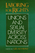 |
Laboring
for Rights
Unions and Sexual Diversity Across Nations
edited by Hunt, Gerald 328 pp • 7x10
• Fall 1999
paper 978-1-56639-718-6
cloth 978-1-56639-717-9
|
|
Sexual
Cultures and the Construction of Adolescent Identities
edited by Irvine, Janice M. 336 pp •
6x9 • Spring 1994
paper 978-1-56639-136-8
cloth 978-1-56639-135-1
|
|
The
Regulation of Sexuality
Experiences of Family Planning Workers
Joffe, Carole 208 pp • Fall 1987
paper 978-0-87722-510-2
cloth 978-0-87722-423-5 |
|
Just Queer Folks
Gender and Sexuality in Rural America
Johnson, Colin R.
264 pp • 6x9 • Spring 2013
paper 978-1-4399-0998-0
cloth 978-1-4399-0997-3 |
|
AIDS,
The Winter War
Kahn, Arthur D. 224 pp • 6x9 • Fall
1992
cloth 978-1-56639-018-7 |
| 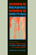 |
Women
Reading Women Writing
Self-Invention in Paula Gunn Allen, Gloria Anzaldúa, and Audre
Lorde
Keating, AnaLouise 256 pp • 5.2x8.25
• Spring 1996
paper 978-1-56639-420-8
cloth 978-1-56639-419-2
|
| 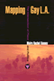 |
Mapping
Gay L.A.
The Intersection of Place and Politics
Kenney, Moira Rachel 240 pp • 5.5x8.25
• Spring 2001
paper 978-1-56639-884-8
cloth 978-1-56639-883-1
|
|
Queer
Family Values
Debunking the Myth of the Nuclear Family
Lehr, Valerie 224 pp • 6x9 • Spring
1999
paper 978-1-56639-684-4
cloth 978-1-56639-683-7
|
|
Officially
Gay
The Political Construction of Sexuality by the U.S. Military
Lehring, Gary L. 248 pp • 5.5x8.25 •
Spring 2003
paper 978-1-59213-035-1
cloth 978-1-59213-034-4
|
|
Lesbian
and Gay Writing
An Anthology of Critical Essays
edited by Lilly, Mark 220 pp • Spring
1990
cloth 978-0-87722-706-9 |
| 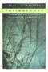 |
Poisoned
Ivy
Lesbian and Gay Academics Confronting Homophobia
McNaron, Toni A. H. 256 pp • 6x9 •
Fall 1996
paper 978-1-56639-488-8
cloth 978-1-56639-487-1
|
|
Legalizing
Gay Marriage
Mello, Michael, foreword by David Chambers 352
pp • 6x9 • Fall 2004
paper 978-1-59213-079-5
cloth 978-1-59213-078-8
|
|
Sportsex
Miller, Toby 192 pp • 6x9 • Fall
2002
paper 978-1-56639-994-4
cloth 978-1-56639-864-0
|
 |
Deregulating Desire
Flight Attendant Activism, Family Politics, and Workplace Justice
Murphy, Ryan Patrick 252 pp • 6x9 •
Fall 2016
paper 978-1-4399-0989-8
cloth 978-1-4399-0988-1 |
| 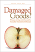 |
Damaged Goods?
Women Living with Incurable Sexually Transmitted Diseases
Nack, Adina
264 pp • 5.5x8.25 • Spring 2008
paper 978-1-59213-708-4
cloth 978-1-59213-707-7
|
|
Passion
and Power
Sexuality in History
edited by Peiss, Kathy and Christina Simmons with Robert A. Padgug
328 pp • 6x9 • 1989
paper 978-0-87722-637-6
cloth 978-0-87722-596-6 |
|
Honey,
Honey, Miss Thang
Being Black, Gay, and on the Streets
Pettiway, Leon E. 320 pp • 6x9 •
Fall 1996
paper 978-1-56639-498-7
cloth 978-1-56639-497-0
|
| 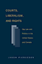 |
Courts,
Liberalism, and Rights
Gay Law and Politics in the United States and Canada
Pierceson, Jason 264 pp • 6x9 •
Fall 2005
paper 978-1-59213-401-4
cloth 978-1-59213-400-7
|
 |
From
Identity to Politics
The Lesbian and Gay Movements in the United States
Rimmerman, Craig A. 256 pp • 6x9 •
Fall 2001
paper 978-1-56639-905-0
cloth 978-1-56639-904-3
|
 |
The
Changing of the Guard
Lesbian and Gay Elders, Identity, and Social Change
Rosenfeld, Dana 264 pp • 5.5x8.25 •
Spring 2003
paper 978-1-59213-031-3
cloth 978-1-59213-030-6
|
|
Red War on the Family
Sex, Gender, and Americanism in the First Red Scare
Ryan, Erica J.
New in Paperback!
232 pp • 6x9 • Fall 2016
paper 978-1-43990-885-3
cloth 978-1-43990-884-6 |
| 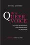 |
In a Queer Voice
Journeys of Resilience from Adolescence to Adulthood
Sadowski, Michael, foreword by Carol Gilligan
210 pp • 6x9 • Fall 2012
paper 978-1-4399-0802-0
cloth 978-1-4399-0801-3 |
| 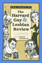 |
The
Best of The Harvard Gay & Lesbian Review
edited by Schneider, Jr., Richard, foreword by Edmund White
363 pp • 6x9 • Fall 1997
cloth 978-1-56639-596-0 |
| 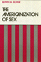 |
The
Americanization of Sex
Schur, Edwin M. 248 pp • Spring 1988
paper 978-0-87722-633-8
cloth 978-0-87722-521-8 |
| 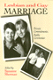 |
Lesbian
And Gay Marriage
Private Commitments, Public Ceremonies
edited by Sherman, Suzanne 288 pp • 6x9
• Fall 1992
paper 978-0-87722-975-9
cloth 978-0-87722-974-2
|
|
Making Modern Love
Sexual Narratives and Identities in Interwar Britain
Sigel, Lisa Z.
256 pp • 6x9 • Fall 2012
paper 978-1-4399-0805-1
cloth 978-1-4399-0804-4
|
|
The
Homoerotic Photography of Carl Van Vechten
Public Face, Private Thoughts
Smalls, James
240 pp • 7x10 • Spring 2006
cloth 978- 1-59213-305-5
|
| 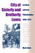 |
City
of Sisterly and Brotherly Loves
Lesbian and Gay Philadelphia, 1945-1972
Stein, Marc 480 pp • 6x9 • Fall
2004
paper 978-1-59213-130-3
|
|
A
Nation by Rights
National Cultures, Sexual Identity Politics, and the Discourse
of Rights
Stychin, Carl F. 256 pp • 5.5x8.25 •
Spring 1998
paper 978-1-56639-624-0
cloth 978-1-56639-623-3
|
|
Tortilleras
Hispanic and U.S. Latina Lesbian Expression
edited by Torres, Lourdes and Inmaculada Perpetusa-Seva 288
pp • 7x10 • Fall 2002
paper 978-1-59213-007-8
cloth 978-1-59213-006-1
|
|
A Genealogy of Queer Theory
Turner, William B.
256 pp • 6x9 • Spring 2000
paper 978-1-56639-787-2
cloth 978-1-56639-786-5 |